15년 차 마케터가 혼자 서너 브랜드를 돌리는 법
게스트 김형태 대표는 스스로 "마케터 시즌 3"을 맞았다고 소개해요. 광고 대행사에서 5년 동안 국내 주요 브랜드의 콘텐츠 마케팅을 했고, SK 그룹을 포함한 인하우스에서 9년 동안 퍼포먼스 마케팅을 했어요. 지금은 독립해서 데일리그로스라는 회사를 혼자 운영해요. 직원이 없는 1인 대행사예요.
주력 매체는 메타 광고예요. 클라이언트 상황에 따라 네이버 광고, 틱톡, 구글 광고도 함께 돌려요. 하는 일은 세 가지예요. 브랜드의 퍼포먼스 마케팅을 대신 집행하고, 컨설팅하고, 교육해요.
혼자서 브랜드 서너 곳을 맡을 수 있는 이유
대행사 시절에는 광고 기획자 서너 명이 한 파트로 묶여 브랜드 서너 개를 맡았어요. 지금은 혼자서 같은 수의 브랜드를 운영해요. 예전 같으면 몸을 갈아 넣어야 했을 일이에요. 차이는 클로드 코드예요.
아래 그림 왼쪽이 원래 매일 시간을 가장 많이 잡아먹던 일들이에요. 매일 아침 광고 실적을 받아 구글 시트에 옮기고, 데이터를 분석하고, 광고 소재를 기획하고 만드는 일이죠. 이게 빨라지면서 오른쪽, 결정하는 일에 시간을 쓸 수 있게 됐어요. 남는 시간으로 여러 클라이언트를 맡고 강의도 해요.
진행자 조쉬는 클로드 코드가 보통 코딩 에이전트로 알려져 있지만, 오히려 마케팅 업계에 미치는 영향이 더 크다고 느꼈대요. 김 대표도 같은 생각이에요. 다만 이제 막 시작하는 단계라고 덧붙여요.
빌더가 놓치는 것: 드릴이 아니라 구멍
김 대표의 강의는 마케터보다 개발자와 창업자가 더 많이 들어요. AI 덕분에 만드는 일은 쉬워졌는데, 출시한 뒤 어떻게 팔지 막막한 사람이 늘었기 때문이에요. 그가 이들에게 가장 먼저 하는 말은 "고객 관점을 빠뜨리지 말라"예요.
제품을 직접 만들면 애착이 생겨요. 그래서 "우리 제품이 이만큼 좋다"를 알리는 데 힘을 쏟죠. 그런데 고객이 원하는 건 제품이 좋다는 사실이 아니라 내 문제를 어떻게 풀어 주느냐예요. 여기에 고객 안쪽의 욕망을 건드리는 메시지까지 던지는 게 생각보다 어려워요.
드릴이 아니라 구멍
그는 마케팅 구루로 불리는 시어도어 레빗의 말을 예로 들어요. 고객은 0.25인치 드릴을 원하는 게 아니라 0.25인치 구멍을 원한다는 말이에요. 아래 그림처럼 이야기의 출발점을 제품 쪽에서 고객 쪽으로 옮기라는 뜻이에요.
광고 소재로 옮기면 이렇게 돼요. 선크림 브랜드라면 SPF(Sun Protection Factor) 수치를 내세우기보다, 고객이 실제로 가진 고민에서 시작해요. 많은 사람이 "선크림을 바르면 여드름이 난다"고 걱정하니까, "우리 제품은 이런 이유로 안 나요"라고 말하는 식이에요.
| 예시 | 제품 관점에서 시작 | 고객 관점에서 시작 |
|---|---|---|
| 드릴 | 드릴 성능이 이만큼 좋아요 | 구멍이 잘 뚫리고, 그 구멍으로 이걸 쉽게 할 수 있어요 |
| 선크림 | SPF가 몇이에요 | 바르면 여드름 날까 걱정이죠? 이런 이유로 안 나요 |
실제로 마케팅을 대행하다 보면 소재에 고객 이야기보다 제품 이야기가 더 많을 때 평가가 나쁜 경우가 많대요. "당연한 이야기지만 그게 정답"이라는 게 그의 결론이에요.
메타 MCP 이후, 분석은 AI가 판단은 사람이
메타는 4월쯤 공식 MCP를 내놨어요. 김 대표는 그전에도 API를 연결해 광고 실적을 자동으로 받아 왔어요. 그래도 할 때마다 불안했대요. 메타가 API로 뭔가를 하는 계정에 페널티를 주지 않을까 싶었거든요. 공식으로 열어 줬다는 건 메타가 이 방식을 인정하고, 오히려 그쪽으로 가라고 말하는 신호라고 봐요. 소재 제작도 힉스필드 같은 AI 도구를 연결하면 쉽게 할 수 있게 됐어요.
분석은 오히려 더 쉬워졌어요
조쉬는 소재를 만들어 집행하는 데까지는 빨라졌지만, 그다음 성과 측정은 막막했다고 말해요. 김 대표의 답은 반대예요. 측정과 분석이야말로 AI 도움을 많이 받는 부분이래요. 예산이 커질수록 소재와 캠페인이 늘어나서 분석 공수가 컸거든요. 아래 슬라이드처럼 광고 데이터를 MCP나 API로 연결하면, AI가 대시보드를 만들고 현황을 사실대로 정리해 보고서로 써 줘요.
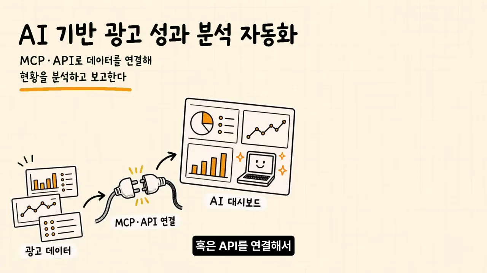
AI가 '끄라'고 해도 바로 끄면 안 되는 이유
문제는 AI의 분석이 늘 정확하지는 않다는 점이에요. 대표적인 게 "이 소재는 효율이 나쁘니 끄세요"라는 제안이에요. 요즘 메타 광고는 어드밴티지+ 캠페인처럼 소재 여러 개를 한 캠페인 안에 몰아 넣는 방식이 많아요. 아래 화면이 메타가 이 캠페인을 소개하는 장면이에요. 광고 하나에 연령·관심사 같은 타깃과 예산이 자동으로 붙어요.
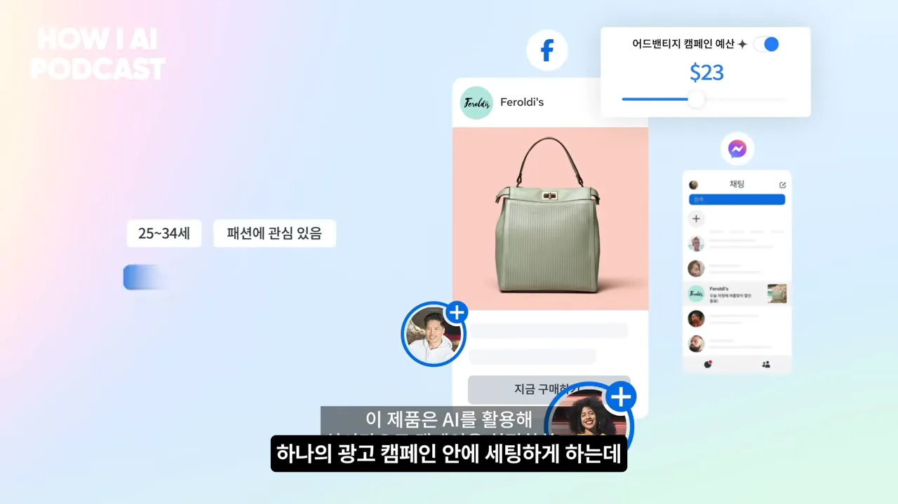
이런 캠페인에서는 메타가 판단해 성과 좋은 소재에 예산을 먼저 몰아줘요. 버그가 아니라 의도된 동작이에요. 판매 캠페인이라면 메타는 "구매를 많이 일으키라"는 요청을 받은 셈이에요. 그래서 처음 학습 단계에서 여러 소재를 테스트하고, 잘되는 소재에 예산 대부분을 몰아요. 아래 그림의 마지막 칸이 걱정거리예요.
그래서 지금은 AI의 제안에 단편적으로 제한을 걸 수밖에 없어요. 어떤 소재가 어떤 성과를 내는지는 쉽게 분석해요. 그걸 끌지, 어떤 소재를 새로 만들지 정하는 건 오히려 마케터의 더 중요한 역할이 됐어요.
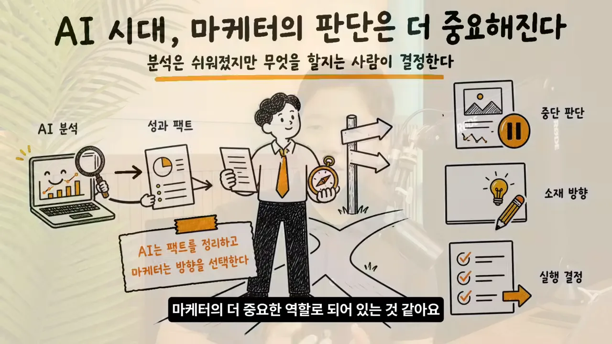
조쉬는 매일 아침 9시에 소재를 만들고, 전날 광고를 분석하고, 효율 낮은 광고를 자동으로 끄는 크론잡을 걸면 완전 자율 마케팅이 될 거라고 생각했대요. 김 대표는 아직 멀었다고 봐요. 그게 된다면 성공 사례가 쏟아져야 하는데, 아직 그런 사례를 거의 못 봤다는 거예요.
클로드 코드 폴더 하나에 담은 12단계
여기부터 실제 작업 화면이에요. 김 대표가 클로드 코드에서 프로젝트 폴더를 열면, 오른쪽 파일 트리에 미리 만들어 둔 폴더 12개가 보여요. 01_brand부터 12_period까지 번호가 붙어 있고, 그 아래에 CLAUDE.md, .mcp.json, README.md 같은 설정 파일이 있어요.
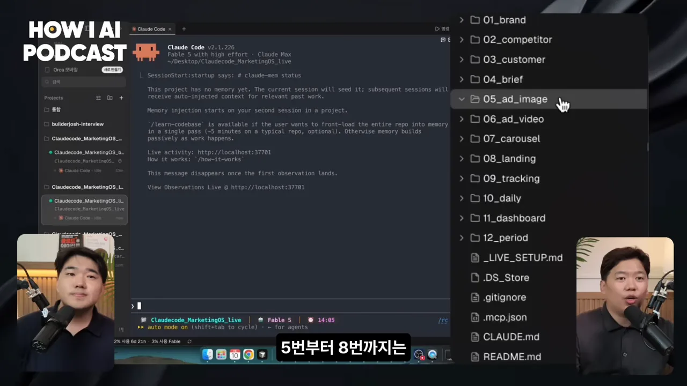
그는 12개를 세 묶음으로 나눠요. 1~4번은 전략 기획, 5~8번은 콘텐츠, 9~12번은 퍼포먼스 집행부터 데이터 분석까지예요. 아래 그림에서 점선으로 두른 04번과 12번은 사람이 판단해야 하는 단계예요. 이 이야기는 조금 뒤에 다시 나와요.
앞의 세 칸은 3C 분석이에요
전략 파트의 첫 세 폴더는 마케팅의 전통적인 프레임워크인 3C 분석을 그대로 따라요. 영상 자막도 아래처럼 고객(Customer), 경쟁사(Competitor), 자사(Company) 세 요소를 분석해 차별화된 전략을 세우는 틀이라고 풀어 줘요.
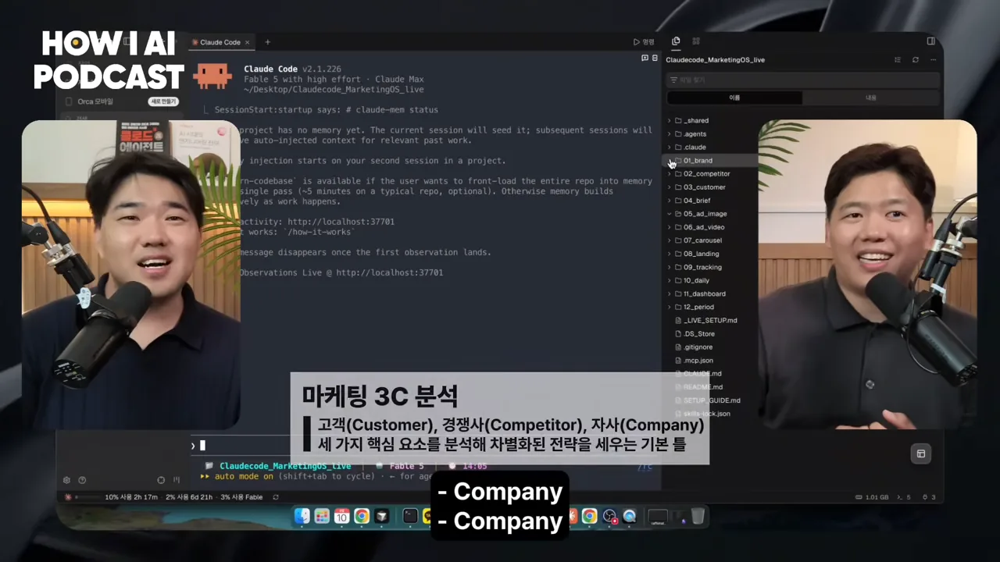
| 폴더 | 3C | 여기서 하는 일 |
|---|---|---|
| 01_brand | 자사 | 브랜드 톤, 자주 쓰는 컬러, USP(Unique Selling Proposition)를 분석해 넣어요. 로고와 제품 이미지도 최대한 많이 넣어요 |
| 02_competitor | 경쟁사 | 경쟁사가 어떤 소구 포인트로 메시지를 내는지, 광고와 상세 페이지를 어떻게 하는지 분석해 인사이트를 뽑아요 |
| 03_customer | 고객 | 고객이 가진 페인 포인트를 분석해요 |
01번에 공을 가장 많이 들여요. 클로드 코드 같은 코딩 에이전트가 쓸모 있는 이유는 내 맥락을 읽을 수 있어서예요. 소재 제작까지 이 폴더 하나에서 하니까, 뷰티 브랜드라면 내 제품 이미지를 읽어야 그대로 만들거나 분석할 수 있어요.
자료가 처음부터 다 있을 필요는 없어요. 내 브랜드만 있으면 나머지는 클로드가 찾아서 채우게 해 뒀어요. 그래도 미리 넣는 자료가 많을수록 좋아요. 특히 경쟁사는 클로드보다 대표가 더 잘 알기 때문에, 직접 입력할 수 있게 구성했어요.
예시 브랜드는 수파노바
이번 데모의 예시는 진행자 조쉬가 만든 AI 웹디자인 빌더 SaaS, 수파노바예요. 아래 홈 화면의 "바이브코딩 할 땐, 디자인은 수파노바"라는 문구가 뒤에서 만들 광고들의 출발점이에요.
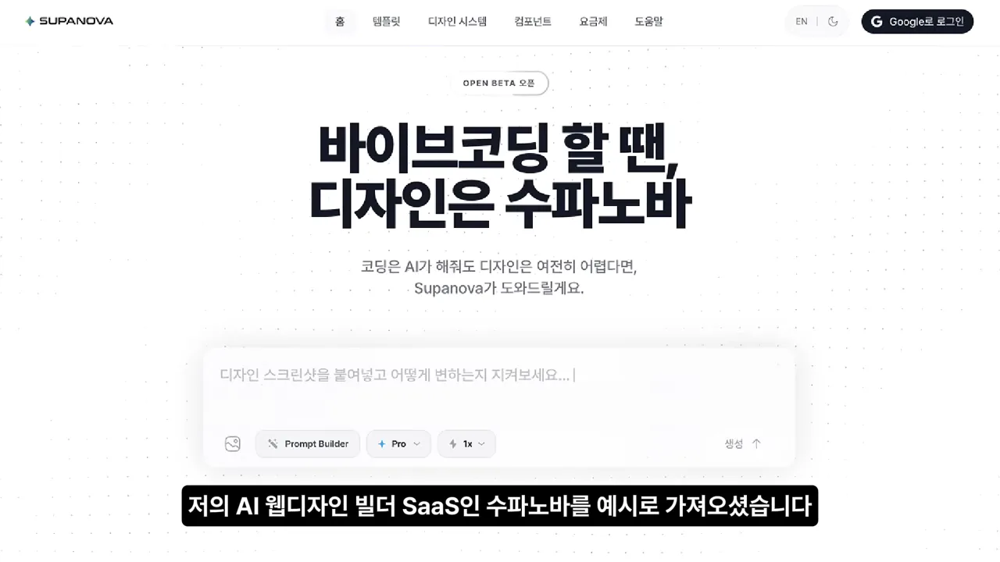
왜 1번부터 12번까지 한 번에 돌리지 않을까요
조쉬는 원하면 12단계를 루프로 쭉 돌릴 수도 있겠다고 물어요. 김 대표는 그렇게 한 적이 없대요. 중간중간 넣어야 할 것이 많아서예요. 이미지·영상 단계는 힉스필드 같은 도구가 연동돼 있어야 하고, 분석 단계는 구글 애널리틱스나 메타 MCP가 연결돼 있어야 성과 대시보드를 만들 수 있어요.
더 큰 이유는 판단이에요. 04번에서 정하는 광고 카피, 12번에서 정하는 집행 뒤 최적화는 대표나 마케터가 직접 판단하는 게 훨씬 낫다고 봐요. 줄일 수 있는 업무는 줄이고, 판단이 들어가야 하는 개선은 사람이 하는 구조예요.
브랜드 브리프에서 소재 브리프까지
작업은 01번 브랜드 분석부터 시작해요. 수파노바 사이트 URL(Uniform Resource Locator)을 넣고 분석 스킬을 부르면, 클로드가 사이트를 직접 읽고 브랜드 브리프를 정리해요. 브랜드가 무엇을 강조하는지 한 줄로 정의하고, 그 아래에 광고의 핵심 소구 포인트를 뽑아요.
브랜드 브리프: USP, 컬러, 가격, 믿을 이유
아래 화면이 'USP 3개 (광고에 절대 빠지면 안 되는 것)' 표예요. 칸마다 근거 열에 사이트에서 실제로 확인한 내용이 붙어 있어요. A1의 근거는 홈 화면의 "Templates 203", "Design Systems 66" 문구이고, A2는 사이트 전체 폰트가 Pretendard라는 점이에요.
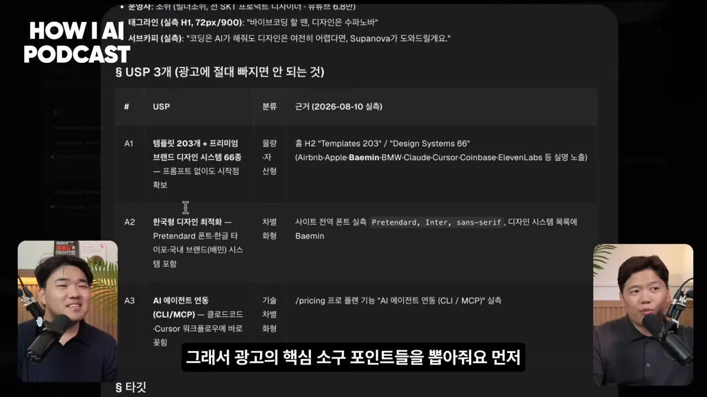
타깃이 누구인지는 클로드가 알아서 추론해요. 사이트 문구를 분석해 텍스트 톤도 잡아요. 김 대표가 중요하다고 짚는 건 컬러예요. 아래처럼 자주 쓰는 컬러를 HEX(Hexadecimal) 값과 쓰임새로 정리하고, 쓰지 말아야 할 컬러도 따로 적어요.
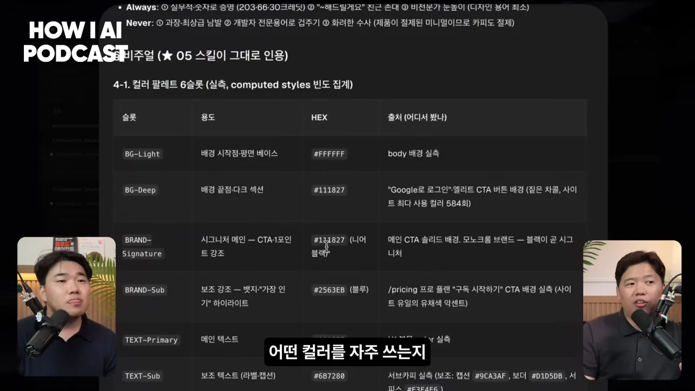
판매 페이지가 있으면 가격까지 분석해요. 아래 화면 위쪽은 /pricing 페이지에서 읽은 요금제(무료 0원·30크레딧, 프로 19,000원·300크레딧, 엘리트 49,000원)예요. 아래쪽 RTB(Reason To Believe)는 이 제품을 믿을 수 있는 이유, 곧 사회적 증거를 모은 칸이에요. 전 SKT(SK Telecom) 프로덕트 디자이너가 만든 도구라는 점이 들어가 있어요.
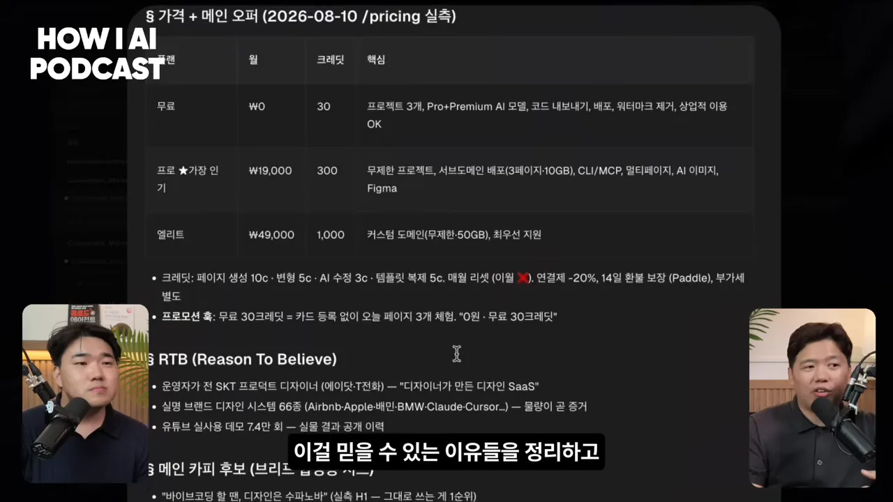
메인 카피 후보까지 정리하면 브랜드 브리프가 끝나요. 나중에 이미지 소재, 영상 소재, 랜딩 페이지를 만들 때 모두 이 문서를 참고해요.
소재 브리프: 컨셉, 메시지 후보, 스토리보드
조쉬가 "그럼 브리프 문서는 실제로 어떻게 나오느냐"고 물어요. 여기서 말하는 브리프는 광고 메시지에 대한 브리프예요. 맨 위에 컨셉 한 줄이 있고, 그 아래 메시지 후보가 셋 있어요. 클로드가 분석해서 제안한 후보 중 김 대표가 1번 "AI Slop 탈출"을 골랐어요. 화면에 '선택됨' 표시가 보여요.
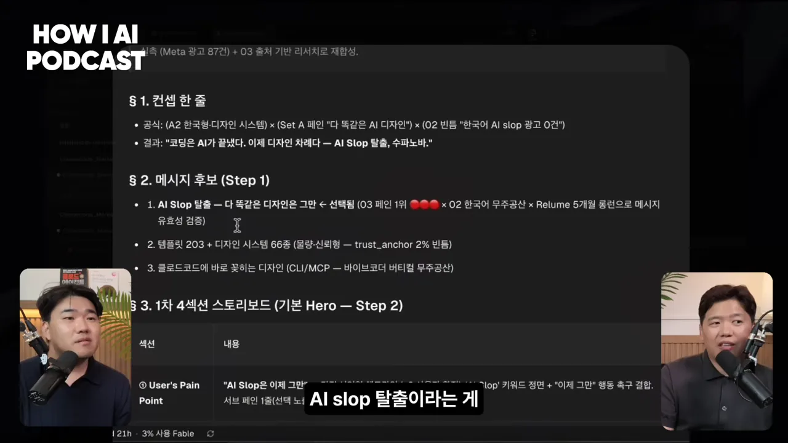
그다음이 4섹션 스토리보드예요. 앞에서 빌더에게 필요하다고 한 고객 관점이 여기서 형식이 돼요. 고객이 보자마자 "내 이야기구나" 하려면 메시지가 페인 포인트에서 시작해야 하거든요. 아래 표의 네 칸, ① User's Pain Point ② Solution ③ Creative Key Visual ④ Promotion(+CTA(Call To Action))이 그 순서예요.
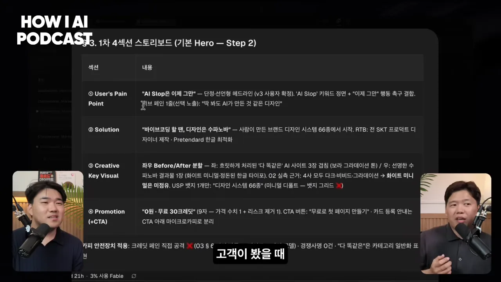
김 대표는 이 네 칸을 프레임워크로 굳혀서 스킬에 넣어 뒀어요. 브리프 마지막에는 광고 유형 변형이 붙는데, 하나의 유형으로만 가지 않는 이유는 다음 장의 안드로메다 업데이트와 이어져요.
안드로메다 이후, 앵글을 넓혀야 해요
예전 메타 광고는 마케터가 타게팅을 잘게 쪼개는 게임이었어요. "2030, 강남 거주"처럼요. 안드로메다 업데이트 이후에는 광고 소재를 여러 개 올려 두면, 메타의 AI가 그 광고가 필요한 사람을 찾아가는 쪽으로 바뀌었어요.
영상이 보여 주는 슬라이드를 왼쪽부터 읽으면 이래요. 많은 광고 후보가 안드로메다 필터를 지나 소수 후보로 줄고, 그다음에 반응 가능성을 평가해요. 필터 아래 '최종 선택 아님'이라는 표시가 핵심이에요. 안드로메다는 고르는 단계가 아니라 1차로 걸러 내는 단계예요.
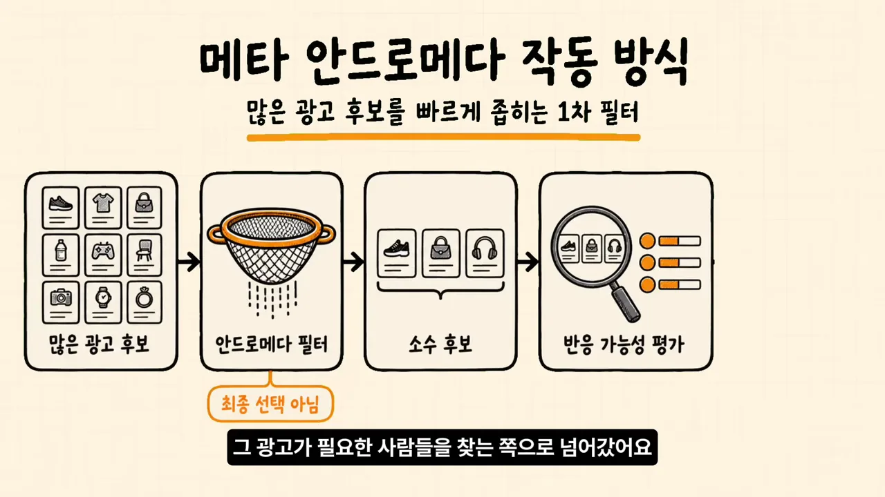
소재를 많이 만들라는 말의 진짜 뜻
그래서 요즘은 소재를 많이 만들라고 해요. 그렇다고 카피만 살짝 바꾼 소재를 여러 개 만들라는 건 아니에요. 메타는 그런 걸 다 같은 소재로 봐요. 바꿔야 하는 건 앵글이에요. 수파노바라면 AI 슬롭이 문제인 사람과, 디자인을 싸게 뽑고 싶은 사람은 니즈가 달라요. 그 니즈별로 앵글을 달리한 소재를 만들도록 브리프에 넣어 뒀어요.
아래 화면이 브리프 마지막의 '6종 변형' 표예요. 앵글마다 고객 문제(UP(User Pain)), 해결책(Sol), 프로모션, 레이아웃이 따로 정해져 있어요. A는 할인·오퍼, B는 자산 히어로, C는 워크플로, D는 사회적 증거예요.
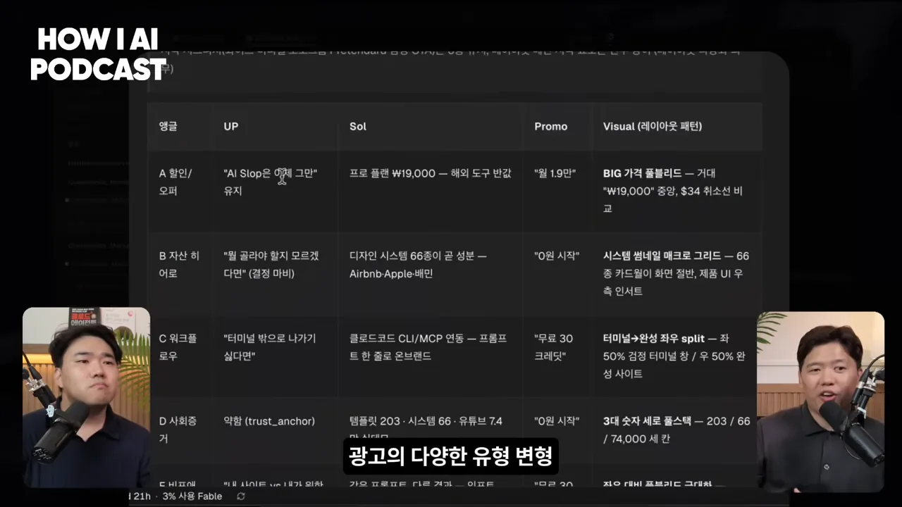
조쉬는 한 니즈로 카피를 여러 번 테스트할 수도 있는데 왜 굳이 니즈를 여러 갈래로 나누느냐고 물어요. 이유는 둘이에요. 하나는 메타가 안드로메다 업데이트 뒤 교육과 세미나에서 앵글을 다양하게, 유형도 다양하게 테스트하라고 많이 이야기했다는 점이에요. 고객이 다 다르니까요. 다른 하나는 실무 경험이에요. 한 페인 포인트를 가진 고객은 수가 한정돼 있어서, 예산을 늘리거나 규모를 키우려면 더 다양한 내용이 필요해요.
소재는 얼마나 오래 갈까요
소재 수명은 정말 다양하대요. 김 대표가 독립한 뒤 맡거나 컨설팅한 브랜드는 13~14곳인데, 어떤 광고주는 한 위닝 소재가 2년 넘게 유지되기도 했어요. 뷰티 업계 평균 ROAS(Return On Ad Spend)보다 훨씬 잘 나오면서요. 그런 소재는 화려하지 않아요. 브랜드 고유의 메시지를 담백하게 전한, 이른바 에버그린 소재예요.
| 경우 | 수명 | 운영 방식 |
|---|---|---|
| 에버그린 위닝 소재 | 몇 년까지도 가요 (2년 넘게 간 사례) | 얼마나 더 집행할지 판단해요 |
| 보통 소재 | 짧아요. 길어야 몇 개월 | 예산이 큰 곳은 매주·매월 새 소재를 찾아요 |
| 위닝 소재가 안 나올 때 | — | 새 소재를 다시 발굴하는 일을 반복해요 |
위닝 소재를 얼마나 더 밀지, 안 나오면 무엇을 새로 찾을지 정하는 반복 작업을 AI가 스스로 판단하기는 아직 어려워요. 조쉬도 이 대목에서 사람의 개입이 왜 필요한지 이해가 됐다고 말해요.
이미지·영상 소재를 AI로 만드는 과정
메시지가 정해지고 조쉬가 가상의 광고주로서 "승인할게요"라고 하자, 이제 이미지를 만들어요. 수파노바 고객의 메인 페인 포인트는 AI가 만든 것 같은 이미지를 만들고 싶지 않다는 거예요. 그래서 메인 소재는 "AI 슬롭 탈출"이에요.
아래가 그 메인 소재예요. 스토리보드의 ③ Creative Key Visual에 적힌 대로 왼쪽에는 보랏빛 그라데이션의 비슷비슷한 AI 사이트들이 겹쳐 있고, 오른쪽에는 깔끔한 흰 바탕의 수파노바 결과물이 있어요. 맨 위 제목이 ① 페인 포인트 "AI Slop은 이제 그만"이에요.
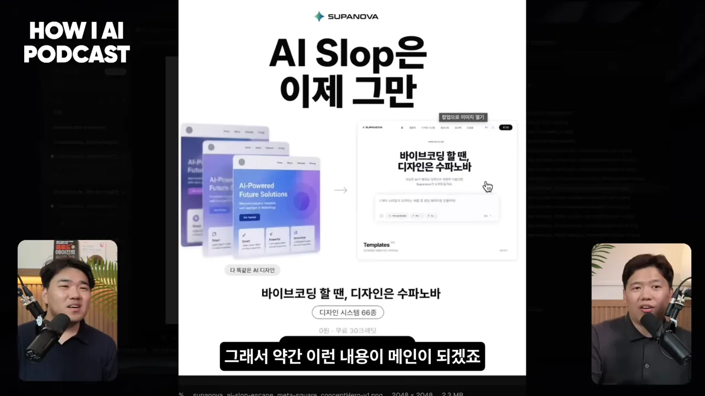
같은 브리프, 다른 앵글
조쉬는 메인 방향이 정해지면 그걸로 변형을 만드는지, 메시지마다 따로 뽑는지 물어요. 김 대표는 메시지별로 앵글을 달리해 여러 소재를 만든 뒤, 광고주에게 몇 개를 추려 제안한다고 해요. 광고주가 고르기도 하고, 신뢰하는 광고주는 "직접 해 보세요"라며 맡기기도 해요.
그중 하나가 사회적 증거 앵글이에요. AI가 리서치해서 조쉬가 실제로 한 말을 찾아 왔어요. 아래 소재의 큰 따옴표 문장이 그 말이고, 그 아래 "조쉬, 전 SKT 프로덕트 디자이너 · 수파노바 메이커"라는 출처가 붙어 있어요. 조쉬는 "제 실제 워딩을 광고 소재로 돌리는 거군요"라며 놀라요.
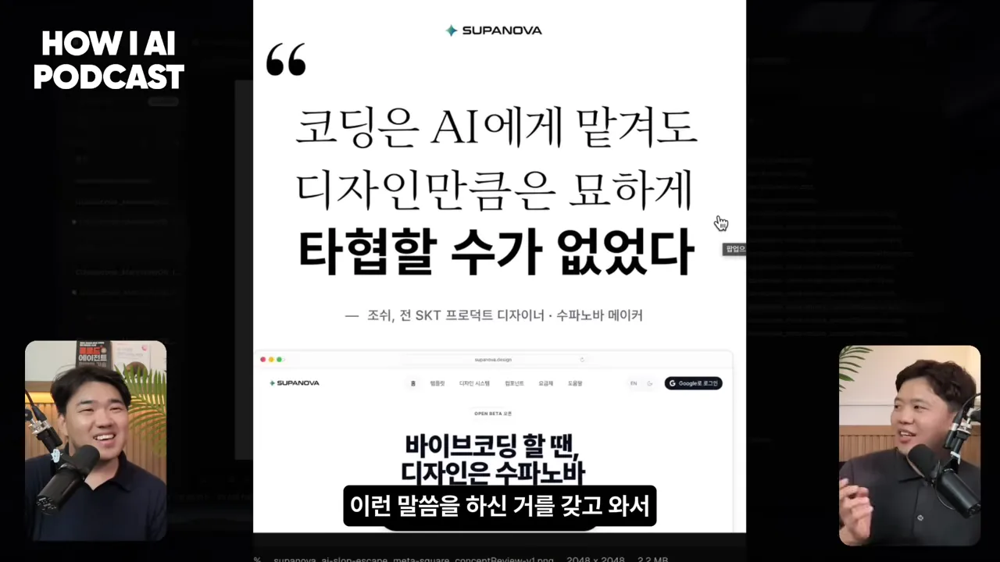
나머지 앵글도 22:06의 변형 표 그대로예요. 아래 왼쪽은 선택지를 줄여 주는 앵글("뭘 골라야 할지 모르겠다면", 디자인 시스템 66종 썸네일), 오른쪽은 터미널에서 바로 이어지는 워크플로 앵글("터미널 밖으로 나가기 싫다면", 클로드 코드에 바로 꽂는 디자인)이에요.
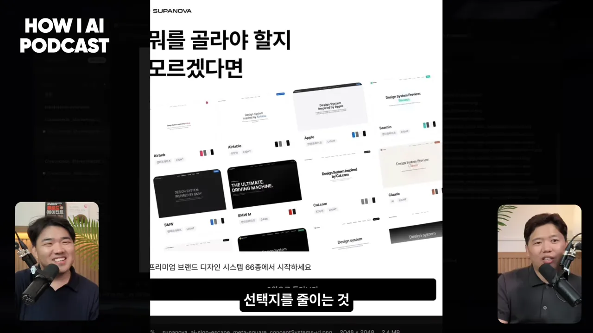
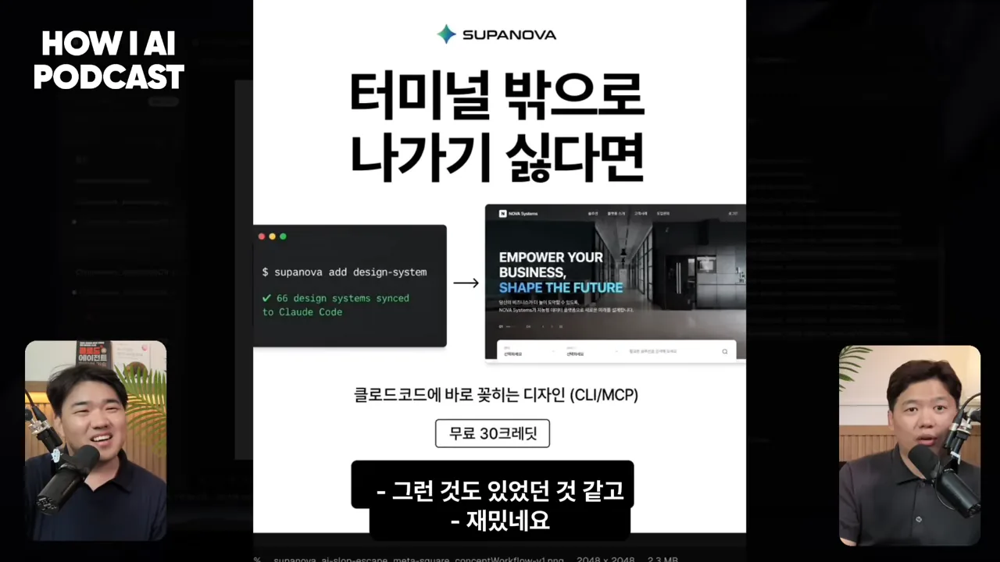
할인·오퍼 앵글은 가격이 주인공이에요. 해외 도구 월 34,000원에 줄을 긋고 ₩19,000을 크게 띄웠어요.
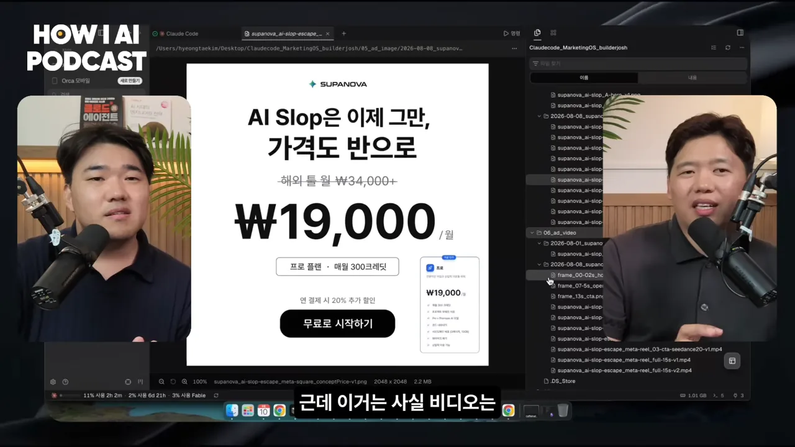
이미지는 어떤 도구로 만들었을까요
광고 이미지 스킬을 처음 만들 때는 나노바나나 API를 연동했어요. 지금은 힉스필드를 연동해서 GPT(Generative Pre-trained Transformer) 이미지 2.0으로 만들어요.
영상 숏폼은 컷을 이어 붙여 만들어요
영상은 아직 이미지보다 활용도가 낮대요. 쓰는 방식은 세 가지예요. 감각적인 컷 하나를 그대로 쓰거나, 짧은 영상 하나를 쓰거나, 여러 영상을 이어 붙여요. 이번 데모는 마지막 방식이에요. 스토리보드대로 컷마다 힉스필드로 시드 이미지를 만들고, 컷마다 영상을 만들어 이어 붙여요.
flowchart LR A["소재 브리프
스토리보드"] --> B["컷마다 시드 이미지
(힉스필드)"] B --> C["컷마다 짧은 영상"] C --> D["이어 붙이기"] D --> E["브랜드 전환용 숏폼"]
컷 순서에도 이유가 있어요. 브랜드 강조보다 처음 후킹이 중요하니까, 첫 컷에 고객의 페인 포인트를 넣어요. 그다음 우리 브랜드의 강점, 마지막에 지금 해야 하는 이유인 CTA를 넣어요. 아래 두 장이 첫 컷과 강점 컷이에요. 첫 컷은 "또 이 디자인이야? 딱 봐도 AI Slop"이라는 고객의 속마음이고, 강점 컷은 "디자인 시스템 66종에서 시작"이에요.
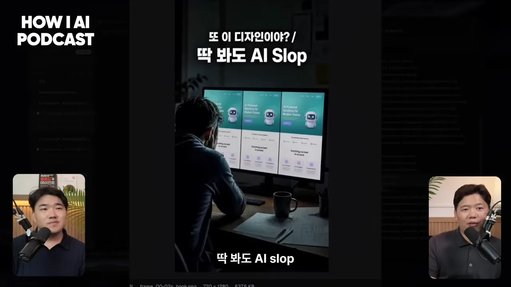
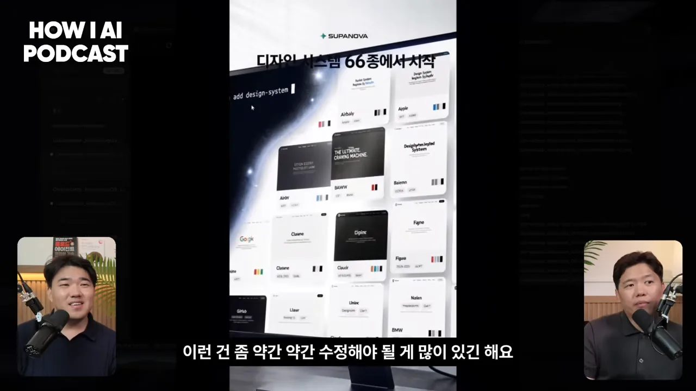
마지막 CTA 컷은 노트북 화면 아래 "0원 · 무료 30크레딧"과 "무료로 첫 페이지 만들기" 버튼이에요. 스토리보드 ④ Promotion(+CTA) 칸의 문구 그대로예요.
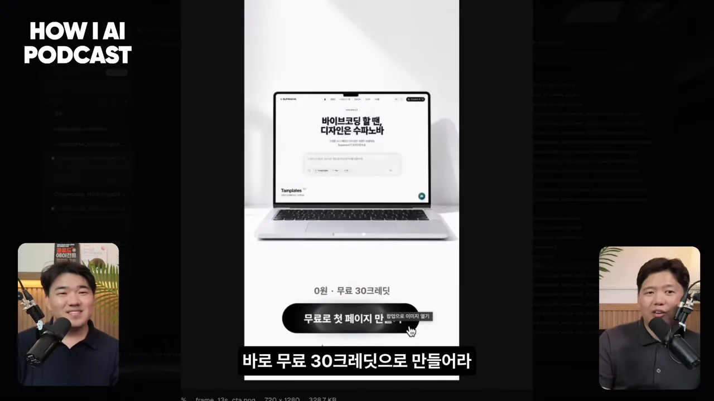
조쉬는 이게 릴스 프레임워크와 같다고 짚어요. 후킹, 본문, CTA예요. 그 틀대로 이미지 컷을 만들고 이어서 영상으로 만들라고 시키면 마지막 결과물이 나와요. 짧은 이미지 소재에 애니메이션만 살짝 넣어 영상처럼 쓰는 경우도 있대요.
대시보드와 주간 리포트
소재를 만들어 집행하면 다음은 분석이에요. 판매가 목적이라면 어떤 소재가 잘 팔리는지 보면서 최적화해요. 김 대표는 운영하는 브랜드마다 폴더를 하나씩 두고 같은 구조로 돌려요.
매일 아침 저절로 채워지는 대시보드
아래는 캐롯글로우라는 뷰티 브랜드의 메타 광고 대시보드예요. 위쪽 카드 여섯 장이 지출(1120.2만), 매출(2323.2만), ROAS(2.07), 구매(155), 노출(178,357), CTR(2.64%)이고, 아래에 일별 지출·매출·ROAS 그래프와 캠페인 TOP 목록이 있어요. 김 대표는 뒤에서 이 화면들이 가상 데이터라고 밝혀요.
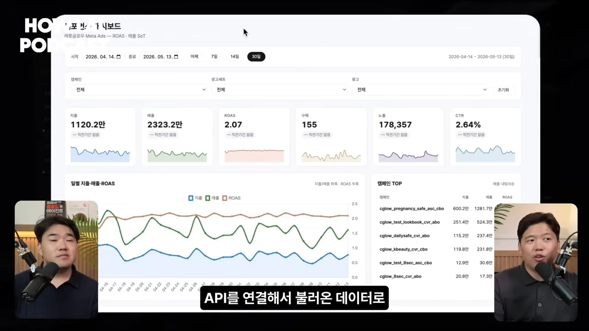
연동 방법은 이래요. 메타는 예전부터 광고 API를 제공했어요. 메타 개발자 사이트에서 앱을 만들고, 읽기 권한이 있는 API 토큰을 받아 연결하는 과정이 꽤 복잡했죠. 최근에는 이 과정을 MCP가 대신해요. 그렇게 가져온 데이터로 실적을 보며 분석해요.
대시보드 아래쪽에는 소재별 성과가 썸네일로 정리돼 있어요. 아래 화면의 카드마다 소재 이미지와 함께 지출, ROAS, 구매, CTR이 붙어 있어서 어떤 소재가 위닝인지 한눈에 비교할 수 있어요.
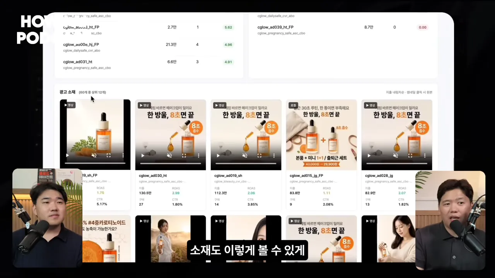
매일 보되, 고치는 건 주 1회
리포팅은 일주일에 한 번이에요. 그 사이 브랜드의 마케터나 MD(Merchandiser), 광고 담당자와 함께 보면서 급한 건 바로 조정해요. 하지만 너무 짧은 주기로 고치면 머신러닝 기반인 요즘 광고는 오히려 실적이 나빠질 수 있어요. 본인은 주식 보듯 매일, 실시간으로 보지만 광고주와 정리하는 건 주 1회예요.
그 자리에서 무엇을 바꿀지 논의하는 단위가 아래 그림의 세 층이에요. 대부분의 퍼포먼스 광고 매체가 캠페인 › 광고 세트 › 광고 구조로 돼 있어요.
주간 리포트도 자동으로 나와요
대시보드 내용을 일주일마다 리포트로 만들게 해 뒀어요. 실행하면 아래처럼 '주간 운영 결과 리포트' 표지가 나와요. 부제는 "한 주 동안 어떤 소재가 우리를 도왔고, 어떤 소재가 예산을 새게 했는지 — 숫자로 그리고 썸네일로 정리했습니다"예요. 아래쪽에 기간(05-18 → 05-24), 브랜드, 데이터 출처(Meta · GA4(Google Analytics 4))가 적혀 있어요.
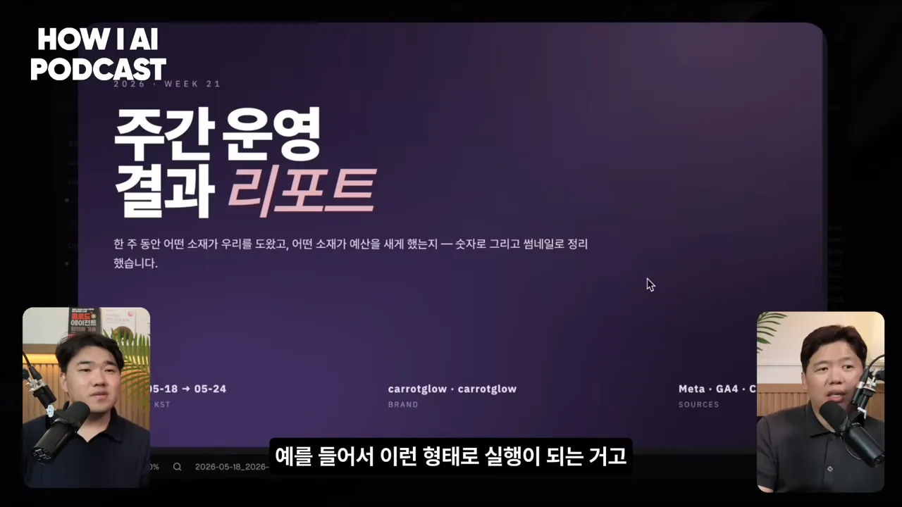
목차는 예전에 매주 하던 주간·월간 보고 형식을 그대로 썼어요. 아래 화면의 12개 항목이 14장짜리 슬라이드로 이어져요.
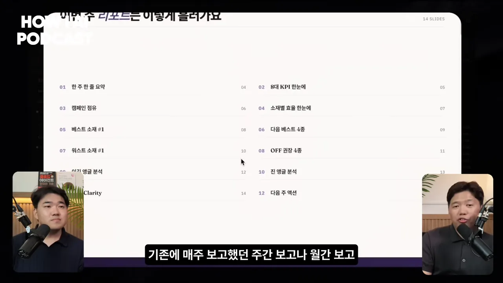
이 리포트로 캠페인 현황, KPI(Key Performance Indicator) 달성률, 소재, 랜딩 페이지를 한 번에 리뷰하면서 조정할 것들을 정리해요.
AI는 실행하고, 마케터는 결정해요
조쉬는 보고서야 쉽게 만들 수 있어도, 사람이 보고 판단하는 영역이 꼭 계속 남아야 하느냐고 되물어요. 김 대표의 답은 경제적인 관점이에요. 에이전트로 운영해도 성과가 잘 나온다면 이런 작업은 필요 없어질 수도 있어요. 하지만 그때부터는 크리에이티브 싸움이 된대요. 어떤 전략 방향으로 갈지는 사람이 정하고, 결국 그 차이가 성과를 가른다는 거예요.
사실 지금도 그렇다고 해요. 안드로메다 이후 소재가 중요하다는 건 메타도 강조하는 부분이에요. 그래서 지금 더 집중해야 하는 건 고객 관점에서 고객이 반응하는 소재를 만드는 일이에요.
광고주와 나누는 대화는 지표 이야기예요
클라이언트가 전부 맡긴 경우에는 논의 없이 직접 집행해요. 브랜드 쪽에 함께 보는 담당자가 있으면 퍼널별로 디테일하게 분석해서 같이 결정해요. 볼 지표는 아래 그림처럼 노출 비용(CPM(Cost Per Mille))에서 시작해 클릭률, 전환율, 장바구니에 담은 비율, 재구매율까지 이어져요.
예를 들어 CVR(Conversion Rate)이 문제라면 랜딩 페이지를 어떻게 바꿀지 함께 논의하고 실제로 바꿔요. 이런 기본 퍼포먼스 지표를 놓고 판단하고, 결정하고, 수정하는 게 회의의 내용이에요.
마케터의 일은 어떻게 바뀔까요
김 대표는 최근 AI 마케팅 서밋에서 발표했는데, 주제가 이랬어요.
AI는 실행하고 마케터는 결정한다
— 영상 37:54
광고 실적 업로드나 분석 같은 단순 반복 업무는 사라지고 있고, 소재 제작도 도움을 많이 받을 수 있어요. 그래서 앞으로는 예전에 잘 안 하던 한 단계 위의 일, 전략과 창의 업무를 더 많이 하게 될 거래요. 경쟁력과 성과도 거기서 달라질 거라고 봐요.
그걸 당장 어떻게 키우느냐는 질문에는 마케팅 원론을 먼저 배우라고 답해요. 고객에게 다가가는 기본 원리는 변하지 않기 때문이에요. 15년 차라고 마케팅을 더 잘하는 것도 아니래요. 해외에서도 젊은 사람들이 빠르게 마케팅을 키우는 경우가 많아요. 기초를 알고 그걸 빠르게 실행하며 움직이는 사람이 더 낫다는 게 그의 결론이에요.
앞으로의 계획으로는 콘텐츠를 많이 만들고 싶다고 해요. 클로드 코드를 포함해 AI를 마케팅에 접목하는 방법을 사업 모델로 삼으려면, 광고만으로는 한계가 있다고 보기 때문이에요.